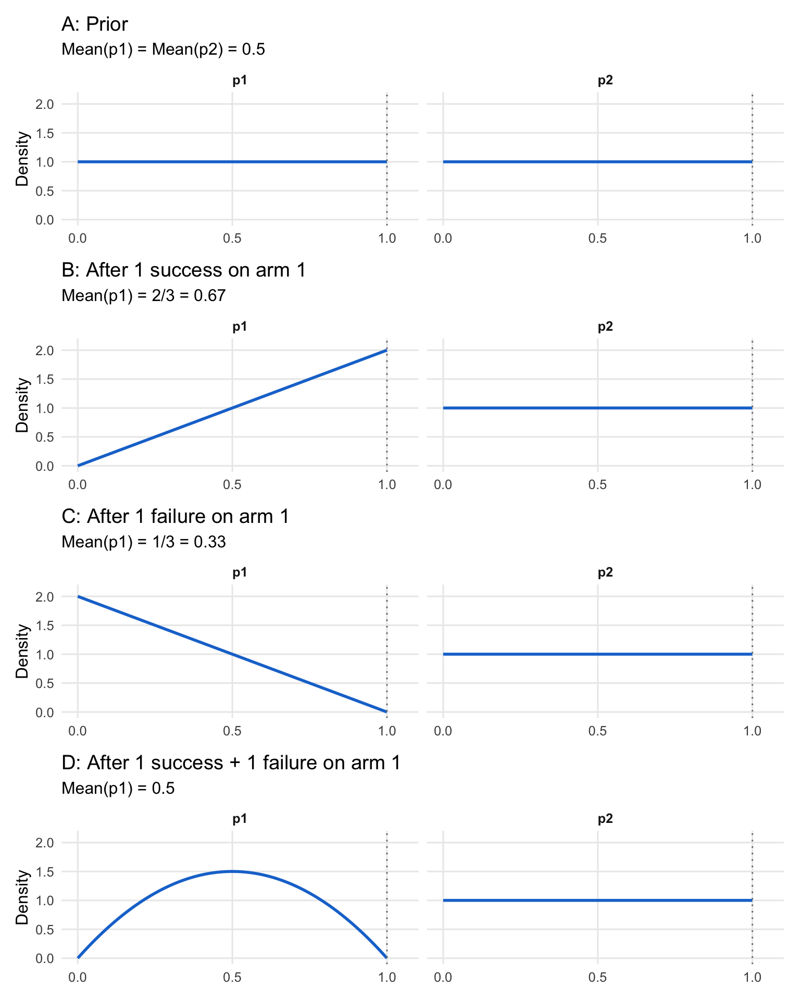

12 Adaptive and Bayesian Trial Design
The frequentist foundations of clinical trial statistics (hypothesis testing, Type I and II error control, survival analysis, repeated-measures models, group-sequential designs, and causal inference methods) are covered in Chapter 11. This chapter builds on those foundations with the adaptive and Bayesian methods that have reshaped drug development over the past three decades.
For most of the 20th century, trials followed a rigid paradigm: fix the sample size in advance, randomize patients equally to treatment and control, analyze the data once at the end, and never peek at accumulating results. This framework was designed to control the probability of false positive conclusions, and it succeeded admirably at that goal.
But it came at a cost. Patients in trials sometimes continued receiving inferior treatments long after the evidence favored the alternative. Promising drugs took years to reach patients because trials could not accelerate when results were compelling. Trials that were clearly failing could not be stopped early without inflating false positive rates. The methodology prioritized the conclusions drawn after the trial over the welfare of patients during it.
The past three decades have seen a fundamental rethinking of this paradigm. Adaptive designs (trials that modify themselves based on pre-specified rules as data accumulates) allow adjustment of sample sizes, dropping of ineffective treatment arms, and shifting of randomization toward better-performing treatments. Bayesian methods provide a coherent framework for updating probability estimates as evidence accumulates. Platform trials test multiple treatments simultaneously within a single protocol, graduating successes and eliminating failures in real time. These innovations do not abandon statistical rigor; they achieve rigor through different means. (For practical implementation of randomization methods, see Chapter 16.)
For a modern, practitioner-oriented synthesis of how these ideas fit together, see Berry’s review of adaptive Bayesian clinical trials (D. A. Berry 2025).
The shift from fixed to adaptive methods spans nearly a century, from theoretical foundations in decision theory to modern platform trials testing dozens of treatments simultaneously. This chapter traces that evolution.
The Belmont Report, published in 1979, established the ethical framework for clinical research (National Commission for the Protection of Human Subjects of Biomedical and Behavioral Research 1979). It drew a sharp distinction: “The purpose of medical or behavioral practice is to provide diagnosis, preventive treatment or therapy to particular individuals. By contrast, the term”research” designates an activity designed to test an hypothesis, permit conclusions to be drawn, and thereby to develop or contribute to generalizable knowledge.”
This dichotomy shaped clinical trial design for decades. Research was about generalizable knowledge; treatment was about helping patients. The two were separate. A patient in a clinical trial was participating in science, not necessarily receiving optimal therapy.
Traditional trials embodied this philosophy. They specified a fixed sample size calculated to control Type I error (the probability of falsely concluding a drug works when it does not). Randomization was equally balanced throughout. Investigators were blinded to accumulating results. Analysis occurred once, at the end, after all data were collected.
This framework controlled Type I error rigorously. It was well understood by regulators and statisticians. But it had costs. Treating a patient in a clinical trial was considered as important as treating a patient after the trial, yet traditional designs ignored this principle. If early results showed one arm performing poorly, patients continued being randomized to it. The design could not adapt. Information accumulating during the trial was deliberately hidden until the very end.
Consider the fundamental irony: as results accumulate showing one treatment superior, continuing to assign patients equally to both arms becomes progressively more unethical. Yet traditional methodology demanded exactly that.
12.1 Preliminaries
Clinical trials operate in a domain fundamentally different from laboratory experiments in physics or chemistry. D.R. Cox, in his foundational Planning of Experiments (Cox 1958), calls this the domain of “large uncontrolled variations.” In a physics experiment, once the technique is mastered and the apparatus is working correctly, closely reproducible results are obtained: the uncontrolled variations are small compared with the effects being measured. If the system is altered and the observation changes, the imposed alteration can safely be assumed to be the cause.
Clinical trials face a different reality. A patient’s condition fluctuates due to the natural history of disease, environmental factors, psychological responses to treatment (the placebo effect), and the supportive care they receive. Even if all patients in a trial received identical treatment, their outcomes would still vary substantially. The effect of a new drug (often a modest improvement over existing therapy) must be detected against this background of inherent variability. As soon as the effects under investigation become comparable in size to the uncontrolled variations, the statistical methods described in this chapter become essential.
In such an environment, absolute outcomes are rarely informative. A five-year survival rate of 40% tells us little unless we know what would have happened without the treatment. For this reason, clinical trials are designed for comparison rather than absolute determination. A new therapy is approved not because it produces some absolute response rate, but because it produces a better response than the alternative. This comparative focus has a practical advantage: differences between treatments often remain relatively stable even when mean outcomes fluctuate substantially across time, geography, or patient populations.
The need for concurrent controls (a group of patients receiving placebo or standard therapy, enrolled in the same trial under the same conditions) follows directly from this logic. It is tempting to compare a new treatment’s results against historical data: “Patients with this disease used to have 30% survival; now with our drug they have 45% survival.” But such comparisons are perilous. Medical practice changes over time. Diagnostic criteria evolve, often detecting disease earlier (lead-time bias). Supportive care improves. Patient populations shift. These “secular changes” can easily produce apparent improvements that have nothing to do with the investigational drug. The classical solution is to include control patients in the same trial, managed under identical conditions, so that the only systematic difference between groups is the treatment itself.
An instructive historical example illustrates this principle. In the early 20th century, a researcher studying inheritance in rats trained animals to perform a task, then bred from them across multiple generations, measuring how quickly each generation learned the task. He observed steady improvement across generations, apparently supporting a theory that acquired traits could be inherited. But there were no controls: no rats bred under identical conditions from untrained parents. When other researchers repeated the experiment with controls, they found that both trained and untrained lineages showed the same improvement over time. The apparent effect was due to secular changes in the health of the rat colony, not inherited learning. Without concurrent controls, this confounding factor was invisible.
This principle applies directly to clinical trials. Unless a treatment effect is dramatic (what statisticians sometimes call a “penicillin effect,” where the improvement is so large it overwhelms any background variation), the comparison must be made against concurrent controls. Except in rare circumstances (such as diseases with 100% mortality and no existing treatment), historical controls cannot provide the certainty needed for regulatory approval.
The structure of a clinical trial follows from its comparative nature. Patients are assigned to treatment arms (the groups being compared). The investigational arm receives the new therapy being tested. The control arm receives either a placebo (an inactive substance designed to be indistinguishable from the active drug) or an active control (the current standard-of-care treatment). The endpoint is the outcome measured to determine whether the treatment worked, for example, survival time, tumor shrinkage, or improvement on a symptom scale. The treatment effect is what we are trying to estimate: the true difference in outcomes between the investigational arm and the control arm.
The population refers to the entire universe of patients with the condition of interest (all the people who might eventually receive the drug if approved). The sample is the much smaller subset actually enrolled in the trial. Because we can only study a sample, our conclusions about the population are always uncertain. This uncertainty is quantified using probability, a number between 0 and 1 (or equivalently, 0% to 100%) that expresses how likely something is to occur. A probability of 0 means impossible; a probability of 1 means certain.
Efficacy refers to the treatment’s ability to produce the desired beneficial effect under the controlled conditions of a trial. This is distinct from effectiveness, which refers to how well the treatment works in routine clinical practice, where patients may be older, sicker, or less adherent to the prescribed regimen than those carefully selected for a trial.
A valid clinical trial must satisfy several requirements, which translate directly into regulatory standards.
Absence of systematic error (bias). Patients receiving different treatments must not differ systematically in ways that could affect outcomes. If healthier patients are assigned to the investigational arm and sicker patients to the control arm, any observed benefit might be due to patient selection rather than the drug. The difficulty is that such bias cannot be removed by statistical analysis after the fact. No calculation of statistical significance can distinguish a treatment effect from a confounding factor: it can only tell us that something caused the observed difference, not what caused it.
The solution is randomization: using a chance mechanism (like a computer-generated random number) to assign each patient to a treatment arm (Cox 2009). Randomization serves three purposes: it avoids selection and other biases in a publicly convincing way; it provides a unified basis for estimating statistical error across different trial designs; and it enables formally exact tests of significance. Of these, bias avoidance is largely uncontroversial: randomization ensures that any differences between groups, whether known factors like age and disease severity or unknown factors we have not even thought to measure, are distributed randomly rather than systematically. This allows us to attribute observed differences to the treatment itself with quantifiable confidence.
A related principle: patients in each treatment arm must respond independently of one another. If all patients receiving the new drug are treated at one hospital and all control patients at another, we cannot separate the drug effect from differences between hospitals. The experimental unit must be the individual patient, not the site.
Precision. Even when systematic error is eliminated through randomization, our estimate of the treatment effect will differ from its true value due to random error (the natural fluctuation that occurs when studying a sample rather than the entire population). The standard error measures the expected magnitude of this random error. A rough interpretation: in about one case out of three, the estimate will err by more than \(\pm 1\) standard error; in about one case out of twenty, by more than \(\pm 2\) standard errors; in about one case out of a hundred, by more than \(\pm 2.5\) standard errors.
The standard error follows a square-root law: it is proportional to \(1/\sqrt{n}\), where \(n\) is the number of patients per treatment arm (the drug group, placebo group, etc.). This mathematical relationship has direct practical consequences. To halve the standard error (to double the precision of our estimate) we must quadruple the number of patients in each arm. To reduce the standard error by a factor of ten requires a hundredfold increase in patients. This explains why confirmatory trials (the large Phase III studies required for regulatory approval) are so expensive: precision is costly. It also explains why improved trial design (using techniques like stratification or crossover to reduce variability) can be more efficient than simply enrolling more patients.
Range of validity. The conclusions drawn from a trial strictly apply only to the specific patients and conditions studied. This is internal validity. But the scientific and public health value of a trial depends on external validity (also called generalizability): the extent to which findings can be extrapolated to broader patient populations.
These goals are in tension. A trial restricted to young, otherwise healthy patients will have less outcome variability and therefore require fewer subjects to achieve a given precision. But its results may not apply to elderly patients with multiple conditions, the very patients who will receive the drug in routine practice. Conversely, a trial with broad enrollment criteria produces more generalizable results but requires more patients to achieve the same precision because outcomes are more variable.
Simplicity. The trial should be as simple as practical. Complex protocols with frequent treatment changes are difficult for research staff to execute correctly. Operational difficulties can compromise data quality. Nevertheless, some complexity may be advantageous (adaptive designs that modify treatment assignments based on accumulating data, for instance), and it is a matter of judgment how far to go.
Quantifiable uncertainty. It must be possible to calculate the uncertainty in the conclusions, ideally from the trial data themselves. This is what statistical analysis provides: not just an estimate of the treatment effect, but a measure of how confident we can be in that estimate. The use of randomization to eliminate systematic differences automatically makes remaining differences random, which justifies the statistical analysis under weak assumptions.
These requirements translate into specific regulatory standards. Regulators focus primarily on two types of decision error.
Type I error (also called a false positive) occurs when a trial concludes that an ineffective drug works. The drug does not actually help patients, but random variation in the trial data made it appear effective. This is the primary regulatory concern: approving ineffective or harmful drugs exposes patients to risk without benefit. Regulators mandate a strict limit on this probability, denoted \(\alpha\) (alpha), conventionally set at 2.5% for one-sided tests or 5% for two-sided tests. This means regulators accept, at most, a 2.5% or 5% chance of approving a drug that does not work.
When a trial result is described as “statistically significant,” it means the probability of seeing such a result by chance alone (if the drug truly had no effect) is below this \(\alpha\) threshold. The null hypothesis is the default assumption that there is no treatment difference. The p-value is the probability of observing results as extreme as those seen, assuming the null hypothesis is true. If the p-value falls below \(\alpha\), we reject the null hypothesis and conclude the treatment has an effect.
Type II error (also called a false negative) occurs when a trial fails to demonstrate the benefit of a drug that actually works. The drug genuinely helps patients, but random variation obscured its effect, leading to the incorrect conclusion that it does not work. The probability of avoiding Type II error is called power: the trial’s ability to detect a true treatment effect when one exists. If a trial has 90% power, there is a 90% probability it will correctly identify an effective drug (and a 10% probability of a false negative). Trials are typically designed to have 80% or 90% power.
Sample size is the lever that balances these risks. The minimum clinically important difference (MCID) is the smallest treatment effect considered worth detecting: the threshold below which a benefit would not justify approval or change clinical practice. Given the target power (e.g., 90%), the Type I error rate (e.g., 2.5%), and the MCID, statisticians can calculate the required sample size. This creates what some call the “iron triangle” of clinical trials: to detect a smaller effect or increase power, you must increase sample size. In a traditional fixed design, the sample size is determined before the trial begins and cannot be changed once enrollment starts.
For decades, the Intent-to-Treat (ITT) principle governed how trials were analyzed: include every patient according to their original randomization assignment, regardless of whether they actually received the treatment, completed the study, or followed the protocol. A patient randomized to the drug arm who never took a single dose is still analyzed as part of the drug arm. ITT is conservative (it tends to underestimate treatment effects) but it preserves the benefits of randomization and prevents manipulation of results by selectively excluding patients.
However, ITT does not always answer the clinical question of greatest interest. In 2019, the ICH E9(R1) addendum introduced the Estimands Framework (International Council for Harmonisation 2019), requiring sponsors to explicitly define what they are estimating and how to handle intercurrent events (things that happen after randomization that affect interpretation, such as patients discontinuing treatment, switching to a different therapy, or using rescue medication). Different strategies for handling these events answer different clinical questions; the addendum defines five, detailed in Chapter 11. Two illustrate the contrast: the treatment policy strategy analyzes outcomes regardless of what happened (similar to ITT), while the hypothetical strategy estimates what would have happened if the intercurrent event had not occurred. By forcing clarity on these choices upfront, the framework ensures the statistical analysis aligns with the clinical question that actually matters to patients and prescribers.
The frequentist framework. The statistical machinery described above (null hypothesis, p-value, Type I and Type II error, power) constitutes the frequentist approach to inference (so named because it interprets probability as the frequency of outcomes over many repeated trials). This framework has dominated regulatory decision-making for decades. The logic is worth understanding clearly.
The frequentist framework does not directly answer the question sponsors and regulators care about most: “Given the trial data, what is the probability that this drug works?” Instead, it answers a different question: “If the drug had no effect, what is the probability of observing data as extreme as what we saw?” This probability is the p-value. If the p-value is very small (below \(\alpha\)), we conclude that the observed result would be very unlikely under the assumption of no effect, and therefore we reject that assumption.
This indirect logic has important implications (Wasserstein and Lazar 2016; Goodman 2008). A p-value of 0.01 does not mean there is a 99% chance the drug works. It means that if the drug truly had no effect, we would see results this extreme only 1% of the time by chance. The distinction is subtle but consequential, and surveys show that even experienced researchers frequently misinterpret p-values. The frequentist framework controls error rates over many hypothetical repetitions of the trial: if we ran thousands of trials on ineffective drugs and used \(\alpha = 0.05\), we would falsely approve about 5% of them. But it does not directly tell us the probability that this particular drug is effective.
The framework is rigid by design. Sample size is calculated before the trial begins based on assumptions about the treatment effect, variability, desired power, and acceptable Type I error. Once the trial starts, these parameters are fixed. Looking at accumulating data and deciding to enroll more patients if results are borderline (a natural impulse) inflates the Type I error rate. Stopping early when results look promising, without pre-specified rules, does the same. The price of controlling error rates is inflexibility. The mathematical foundations for analyzing sequential decisions were laid by Abraham Wald, who developed the Sequential Probability Ratio Test during World War II for industrial quality control (Wald 1947), and later formalized in optimal stopping theory by Albert Shiryaev (Shiryaev 1978). Peter Armitage recognized in 1954 that these methods could address an ethical tension in clinical trials (Armitage 1954, 1960). If one treatment is clearly superior, continuing to randomize patients to the inferior arm is unjustifiable. Sequential methods allow trials to stop early while maintaining valid statistical inference, but they require the stopping rules to be specified in advance.
When traditional designs break down. The five requirements for a valid trial (absence of bias, precision, range of validity, simplicity, and quantifiable uncertainty) were developed in an era of relatively homogeneous patient populations and treatments with broad applicability. Modern medicine increasingly operates in a different world (D. A. Berry 2012), and regulators have responded with new guidance frameworks to address these challenges.
Consider precision medicine (also called personalized medicine), where treatments are targeted to patients with specific characteristics (U.S. Food and Drug Administration 2019c; Zhou et al. 2008). A biomarker is a measurable biological indicator (such as a genetic mutation, a protein level in the blood, or a molecular characteristic of a tumor) that can predict whether a patient will respond to a particular treatment. A drug may work extraordinarily well in 15% of patients who carry a particular genetic mutation and have no effect in the other 85% who lack it. The traditional framework (randomize patients equally, analyze the average treatment effect across all patients) will dramatically underestimate the benefit for the responsive subgroup while exposing non-responders to ineffective treatment. The FDA’s enrichment strategies guidance addresses this challenge by describing predictive enrichment (selecting patients likely to respond based on biomarker status) and prognostic enrichment (selecting patients at higher risk of the outcome), but these approaches create new tensions. The “range of validity” requirement becomes paradoxical: a trial enrolling all patients has broad generalizability but may miss a genuine effect in the responsive subgroup; a trial restricted to biomarker-positive patients (those with the predictive characteristic) may have insufficient patients for adequate precision. Adaptive enrichment designs address this by starting with broad enrollment and using interim data to identify responsive subgroups, restricting subsequent enrollment accordingly (Simon and Simon 2013; Pallmann et al. 2018). Recent advances in covariate-adaptive randomization allow trials to balance treatment assignments across patient characteristics more efficiently, with unified frameworks that can handle continuous covariates and complex covariate structures (Atkinson 2002; Ma et al. 2024).
Rare diseases present an even starker challenge (European Medicines Agency 2006; U.S. Food and Drug Administration 2025). If only 5,000 patients worldwide have a condition, enrolling 1,000 patients for a Phase III trial (a modest size for common diseases) would require recruiting 20% of the entire patient population. The square-root law governing precision becomes an insurmountable barrier here: there simply are not enough patients to achieve traditional power levels for modest effect sizes. The requirement for “precision” collides directly with the reality of small populations. Recognizing this, regulators have developed alternative evidentiary standards: the FDA’s Rare Disease Evidence Principles (RDEP) allow approval based on a single well-controlled study supplemented with confirmatory evidence for diseases affecting fewer than 1,000 U.S. patients, while the EMA’s guideline on small populations explicitly addresses alternative study designs including non-randomized approaches and external controls.
Multiple treatment options compound the difficulty (U.S. Food and Drug Administration 2022; Redman et al. 2020; Renfro and Sargent 2017). Modern oncology trials may need to evaluate several drugs, each potentially combined with several others, across multiple biomarker-defined subgroups. A traditional approach (separate trials for each combination in each subgroup) would take decades and hundreds of thousands of patients. The requirement for “simplicity” becomes impossible when the clinical reality is inherently complex. The FDA’s master protocols guidance describes innovative designs: basket trials (studying one drug across multiple tumor types sharing a biomarker), umbrella trials (studying multiple drugs within one tumor type based on biomarkers), and platform trials (flexible frameworks that can add or remove treatment arms over time). These allow multiple treatments or multiple patient populations to be studied within a single trial infrastructure.
In these settings, the traditional design (fixed sample size, equal randomization, single analysis at the end) is not merely suboptimal but potentially unethical or infeasible. Continuing to randomize patients equally to a clearly inferior arm wastes their contribution. Conducting underpowered trials (trials with too few patients to reliably detect a true treatment effect) in rare diseases wastes resources and patient willingness to participate. Testing one combination at a time when patients are dying delays potentially life-saving treatments for years.
The case for adaptive designs. These challenges have driven the development of adaptive trial designs (trials that modify themselves based on accumulating data according to pre-specified rules) (S. M. Berry et al. 2010). Instead of fixing everything before the first patient enrolls, adaptive designs allow the trial to learn and adjust. Landmark oncology trials have demonstrated the power of this approach: the BATTLE trial used Bayesian adaptive randomization to match lung cancer patients to targeted therapies based on their tumor biomarkers (Kim et al. 2011), while the I-SPY 2 platform trial has evaluated dozens of neoadjuvant breast cancer treatments, graduating effective drugs to Phase III while dropping ineffective ones (Park et al. 2019).
The rigidity of traditional designs is not inherent to valid inference: it is a consequence of the frequentist framework’s requirement to control error rates. If we can pre-specify the rules by which adaptations will occur (writing them into the protocol before the trial begins) and use computer simulations to verify that the trial still controls Type I error under various scenarios, we can maintain regulatory standards while gaining flexibility. The adaptation rules become part of the design, not modifications made after seeing the data.
Adaptive designs can drop ineffective treatment arms early, concentrating resources on promising therapies. They can increase sample size if interim results (analyses conducted partway through the trial, before all patients have completed) suggest the treatment effect is smaller than anticipated. They can shift randomization toward better-performing treatments, reducing the number of patients assigned to inferior arms. They can identify subgroups defined by biomarkers where the drug works best.
A complementary approach uses Bayesian statistical methods. Where the frequentist approach asks “If the drug had no effect, how unlikely would these results be?”, the Bayesian approach directly answers the question clinicians and regulators actually want to know: “Given the data we have observed, what is the probability that this drug works?” Bayesian methods naturally accommodate accumulating evidence, updating probability estimates as each new patient’s data arrives, making them well-suited for adaptive designs. They also provide a coherent framework for borrowing information (using data from previous trials, from other patient subgroups, or from external sources to supplement the current trial’s data), which is especially valuable in rare diseases where every patient’s data is precious.
The following sections explore these innovations: the theoretical foundations of adaptive randomization (the multi-armed bandit problem), Bayesian updating, and the practical implementation of adaptive and platform trials that have transformed drug development over the past two decades.
Chapter 30 provides definitions of key terms used throughout this chapter.
12.2 Bandit Problems: The Theoretical Foundation
The challenges outlined above (precision medicine requiring biomarker-driven allocation, rare diseases demanding maximum learning from limited patients, and multiple treatment options needing simultaneous evaluation) share a common mathematical structure. Each involves a fundamental tradeoff: learning which treatment works best versus treating patients with what currently appears best. This is the exploration-exploitation tradeoff, and its formal study provides the theoretical foundation for adaptive trial designs.
In 1933, statistician W.R. Thompson proposed a radical idea (Thompson 1933). When testing two treatments with unknown efficacy, assign the next patient to treatment A with probability equal to the current probability that A is better than B. Thompson was motivated by ethics: avoiding patients being “sacrificed to the inferior treatment.” His proposal predated Austin Bradford Hill’s first randomized controlled trial by 15 years.
Thompson had discovered what mathematicians would later call a multi-armed bandit problem, a fundamental challenge in decision theory. Imagine slot machines (bandits) with unknown payout rates. You want to maximize total winnings over many pulls. Each pull gives information (which machine pays better?) and potentially gives a reward (you might win). The dilemma: should you exploit by playing the machine that seems best, or explore by trying other machines to learn more?
Clinical trials are bandit problems. Each patient assignment is a “pull.” Some pulls give information about treatment efficacy (explore). Some give effective therapy to the patient (exploit). The goal is maximizing successful outcomes across all patients, both those in the trial and those who will be treated after the trial based on its results.
Early statisticians recognized that fixed randomization (ignoring accumulating data) was clearly suboptimal. If you know which treatment works better, use it. But in trials, you don’t know; you learn as you go. The question becomes: what strategy adapts optimally as evidence accumulates?
Finding the mathematically optimal strategy is computationally demanding, and the difficulty grows explosively as the number of arms and the length of the trial increase. For a small number of arms, though, the optimal strategy can still be computed exactly through dynamic programming, working backward from the last patient. For patient N, the decision is easy: choose whichever arm has higher probability of success. For patient N-1, choose the arm that maximizes expected total successes for the last two patients, accounting for what will be learned. Work backward to patient 1.
A simple example illustrates the power of this approach. Consider testing two treatments with unknown success rates in four patients. Starting with uniform prior beliefs (complete uncertainty about both treatments), an optimal adaptive strategy achieves an expected success rate of 56.9%, compared to 50% for any fixed randomization scheme. The benefit grows with sample size: at 100 patients, the adaptive strategy reaches 64.9%; with infinite patients, it approaches 66.7%, a 16.7 percentage point gain representing the expected value of perfect information.
Thompson’s strategy (randomize each patient with probability equal to the current probability that each arm is better) turns out to be effective in practice, especially when testing many treatments simultaneously. It is not mathematically optimal, but it is practical, intuitive, and performs well. After 70 years of obscurity, Thompson’s 1933 paper has seen explosive growth in citations, driven by applications ranging from search engine ad placement to modern platform trials.
Bayesian Bandit Problems: Updating Beliefs
The mathematical foundation of bandit problems rests on Bayesian updating, the process of revising probability distributions as evidence accumulates (D. A. Berry 2025). Consider a simple two-armed trial where both treatments have unknown success probabilities \(p_1\) and \(p_2\). Before observing any data, we might assume complete uncertainty: both success rates follow uniform distributions on [0, 1], which is equivalent to a Beta(1, 1) distribution.
As outcomes are observed, beliefs update according to Bayes’ rule:
\[ P(\theta|D) = \frac{P(D|\theta)P(\theta)}{P(D)} \]
For a binary outcome (success/failure), if a treatment produces \(s\) successes and \(f\) failures, and we start with a Beta(1,1) prior, the posterior distribution for its success rate \(p\) becomes Beta(\(\alpha_{post}, \beta_{post}\)), where:
\[ \alpha_{post} = 1 + s, \quad \beta_{post} = 1 + f \]
The posterior mean, representing our updated best estimate of the success rate, is given by \(\frac{\alpha_{post}}{\alpha_{post} + \beta_{post}}\), and the variance, representing our uncertainty, is \(\frac{\alpha_{post}\beta_{post}}{(\alpha_{post}+\beta_{post})^2 (\alpha_{post}+\beta_{post}+1)}\). This elegant conjugacy enables exact updating without numerical approximation.
Figure 12.1 illustrates this updating process for a four-patient bandit problem, showing how the probability distribution for \(p_1\) evolves while \(p_2\) (with no observations yet) remains uniform:
With uniform priors, a single success shifts the mean from 0.5 to 2/3, while a failure shifts it to 1/3. After one success and one failure, the mean returns to 0.5, but the distribution is no longer uniform. It is now peaked at 0.5 with less variance, reflecting the additional information that the true rate is unlikely to be extreme.
This updating mechanism enables optimal decision-making: at each patient assignment, select the arm with higher expected success probability, accounting for future patients and the value of information gained.
Despite elegant theory, Bayesian adaptive trials remained theoretical curiosities for decades. Biostatisticians in the 1970s and 1980s considered them naive. Randomization was sacrosanct, considered the gold standard of medical research. The idea of varying randomization probabilities based on accumulating data was viewed with deep suspicion.
One investigator remarked that Bayesians were “loosey-goosey” in adhering to rules. The concern was legitimate: if you look at data repeatedly and adjust your trial, don’t you inflate Type I error? Can such trials be trusted?
The path forward required demonstrating mastery of traditional trial design first, gaining credibility in the clinical research community, then introducing innovations incrementally. It required advances in computing power and statistical software to make complex calculations feasible. And it required regulators willing to embrace innovation while maintaining rigorous standards.
By the late 1990s, these pieces were falling into place. The FDA’s Center for Devices and Radiological Health (CDRH) led early adoption, commissioning white papers on Bayesian approaches in medical device development. Early successes in late-phase device trials demonstrated that Bayesian methods could work in practice, maintaining control of Type I error while providing decision-makers with more intuitive, actionable information.
12.3 The First Wave of Bayesian Adaptive Trials: Proving the Concept
The first wave of real-world Bayesian adaptive trials (late 1990s through the 2010s) did not set out to replace frequentist practice. They succeeded by embedding Bayesian quantities inside conservative, auditable decision rules that stakeholders already understood: stop or continue enrollment, drop unpromising doses, or graduate a regimen to confirmatory testing. The common thread is operational: these designs turned interim data into actionable forecasts (especially predictive probabilities) while still demonstrating familiar operating characteristics through simulation and error-rate control. The examples below became proof points because they were clinically consequential, computationally feasible, and easy to explain to sponsors and regulators in plain language.
CALGB 49907: Predicting Trial Outcomes
In 1999, a fully Bayesian trial was designed for the Cancer and Leukemia Group B (CALGB) testing whether capecitabine could replace standard chemotherapy in elderly breast cancer patients (Muss et al. 2009). The sponsor insisted on 1800 patients to answer the question adequately. The statistical team estimated this would take 15 years to accrue, by which time the question might no longer be interesting.
The compromise: enroll 1800 patients only if needed. Starting at 600 patients, calculate Bayesian predictive probabilities: given current data, what is the probability that further follow-up (without additional enrollment) will answer the question conclusively? If this probability exceeds 80%, stop enrollment and continue follow-up.
The trial stopped at the first interim analysis with 633 patients enrolled. Additional 16-month follow-up delivered a compelling answer: capecitabine cannot replace chemotherapy in this population. The trial achieved its scientific goal with one-third the planned sample size.
By Berry’s account, this was the first fully Bayesian randomized trial published in the New England Journal of Medicine (2009). It demonstrated a key principle: predictive probabilities answer the question sponsors and clinicians actually care about (“Will this trial give us a definitive answer?”) more directly than traditional power calculations.
ASTIN: Adaptive Dose-Finding in Stroke
Pfizer’s ASTIN trial (Acute Stroke Therapy by Inhibition of Neutrophils) tested 15 doses plus placebo of an investigational neutrophil inhibitor in stroke patients (Krams et al. 2003). Rather than fixing allocation probabilities upfront, the trial analyzed data daily, using Bayesian modeling to determine which doses to assign the next day.
The algorithm smoothed estimates across doses and used longitudinal models to predict 90-day outcomes from earlier measurements. It started focusing on low doses and placebo, observing little effect. As evidence accumulated, it progressively concentrated on higher doses.
By the time 500 patients completed 90-day follow-up, the algorithm had concluded the drug was ineffective across all doses and stopped the trial. The trial randomized 966 patients total, substantially fewer than the 1300 maximum, and delivered a clear answer efficiently.
This was dose-finding implemented as a bandit problem: continuously learning which doses were most promising and concentrating resources there, while maintaining sufficient exploration to avoid missing an effective dose.
12.4 Seamless Designs: Combining Phases
Seamless designs take the adaptive logic one step further by linking decisions that are traditionally separated by years and organizational boundaries. Instead of running a Phase II dose-finding study and then starting a new Phase III trial with a fresh protocol, seamless Phase II/III designs use interim learning (often supported by Bayesian modeling and predictive thinking) to select doses or regimens early and then continue accrual into a confirmatory stage under prespecified rules. The practical motivation is economic and ethical: reduce “dead time” between phases, avoid overcommitting to weak doses, and generate decision-grade evidence sooner without sacrificing interpretability.
AWARD-5: From Seven Doses to Blockbuster Drug
Eli Lilly’s AWARD-5 trial for dulaglutide (Trulicity) in type 2 diabetes, designed in collaboration with the FDA as part of the Critical Path Initiative, demonstrated the power of combining Phase II dose-finding with Phase III confirmation in a single seamless trial (D. A. Berry 2025).
The trial began in 2008 testing seven doses (0.25 to 3.0 mg) plus two controls. Stage 1 used response-adaptive randomization with biweekly interim analyses. A composite clinical utility index combined HbA1c, weight loss, heart rate, and blood pressure, capturing both efficacy and safety in a single metric.
Longitudinal modeling predicted 12-month outcomes from early data. This allowed dose selection before any patient reached the primary endpoint. The algorithm selected two non-adjacent doses (0.75 and 1.50 mg) at the earliest allowed timepoint and shifted directly to Stage 2: fixed randomization comparing these doses to controls.
The Data Safety Monitoring Board remarked that they could not overrule the algorithm’s decisions, but that if they could, they would do exactly what the algorithm had done.
Both doses received FDA approval in 2014. Trulicity became Lilly’s best-selling drug, reaching peak annual revenue of $7.4 billion in 2022 according to Lilly’s financial reporting. The seamless design saved at least one year compared to running separate Phase II and III trials.
The 3.0 mg dose, though not advanced to Stage 2, showed mean weight loss of 10 pounds in AWARD-5, foreshadowing the modern use of GLP-1 agonists for obesity, even though Trulicity itself was never approved for weight loss.
Lecanemab: Perfect Phase II Prediction
When Eisai designed their Phase II trial (Study 201) for lecanemab (Leqembi) in Alzheimer’s disease in 2011, they aimed to avoid a common failure mode: Phase II trials that give false signals, leading to failed Phase III trials (Swanson et al. 2021; Dyck et al. 2023; D. A. Berry 2025).
The trial tested six dose regimens including placebo. Initially, 2/7 of patients were randomized to placebo and 1/7 to each dose. At 14 interim analyses, the proportion assigned to placebo was adjusted to match the proportion for the most likely Phase III dose. This focused learning on the dose most likely to advance.
Early data favored the highest doses. By trial end, 48% of patients had received the two highest doses, while only 12% received the two lowest doses. The trial was maximally informative about the regimens of greatest interest.
A critical challenge: Alzheimer’s trials have >30% missing data. Traditional “last observation carried forward” (LOCF) imputation would have estimated only 13% reduction in disease progression, probably insufficient to justify Phase III. Bayesian multiple imputation, prospectively specified, learned patterns of missingness. It recognized that dropouts on placebo were due to treatment failure, while dropouts on the highest dose were often due to regulatory mandates unrelated to efficacy. The Bayesian model estimated 27% reduction.
Eisai proceeded to Phase III. The confirmatory trial showed exactly 27% reduction at the highest dose. The perfect prediction was somewhat accidental (both are point estimates with uncertainty), but it reflected a well-designed Phase II trial delivering accurate efficacy estimates that right-sized the Phase III trial, neither too large nor too small.
The FDA granted accelerated approval, then full approval. Lecanemab became the first disease-modifying therapy for Alzheimer’s disease with clear efficacy evidence.
12.5 Platform Trials
Platform trials extend the adaptive logic from a single experiment to a standing infrastructure: multiple therapies can enter and exit over time, a shared control arm reduces redundant randomization, and Bayesian hierarchical models support learning across biomarker-defined subgroups while controlling false positives through pre-specified decision thresholds. Beyond efficiency, the statistical promise is continuity. Evidence is accumulated in a coherent framework across calendar time, while operational machinery (data pipelines, governance, DSMB processes, endpoint adjudication) stays stable. I-SPY 2 is the canonical illustration because it combines all of these elements (adaptive randomization, biomarker stratification, predictive-probability graduation, and borrowing via common controls) into a platform that actually ran long enough to cycle many agents through the same trial “engine.”
I-SPY 2: Prototype for a New Paradigm
The I-SPY 2 trial in neoadjuvant breast cancer, running from 2010 to 2022, synthesized decades of innovation into a single platform (Park et al. 2016; D. A. Berry 2025). It fundamentally challenged the Belmont Report’s separation of research and treatment.
Patients were classified into eight molecular subtypes based on hormone receptor status, HER2 status, and genomic markers. Each experimental therapy was evaluated within relevant subtypes, up to ten possible “signatures” (potential regulatory indications). The trial used response-adaptive randomization, assigning 20% to control (or 50% if only one experimental arm was available) and distributing the remainder based on performance.
Over its lifetime, I-SPY 2 tested 23 investigational therapies from 18 pharmaceutical companies. Nine graduated to Phase III based on high Bayesian predictive probability of success (\(\geq 85\%\) probability of success in a confirmatory trial). Four have received FDA marketing approval.
The trial’s success stems from several adaptive innovations used together. By using a common control arm (incorporating both concurrently randomized and historical controls through a “time machine” approach), I-SPY 2 created a control cohort an order of magnitude larger than traditional Phase II studies. Monthly continuous learning updated probability distributions across all arms and subtypes. Longitudinal modeling used tumor volume measurements to predict pathologic complete response well before patients reached their final assessments. Nested factorials within these continuing control arms allowed simultaneous testing of combination therapies, letting researchers isolate the effects of individual components more efficiently than separate trials would permit.
Ethical optimization: Consider neratinib, which graduated in the HER2+ signature. Across all 115 patients assigned to neratinib, pCR rate was 37% versus 20% for controls, a 17% absolute difference. Modeling decomposed this: 7% was the drug’s inherent efficacy, and 10% was due to adaptive randomization concentrating assignments in responsive subtypes.
Said differently: patients in I-SPY 2 simultaneously participated in rigorous research and received optimized therapy. The trial merged science and treatment, rendering the Belmont Report’s dichotomy obsolete.
I-SPY 2 served as prototype for platform trials across diseases: BATTLE in lung cancer, GBM AGILE in glioblastoma, REMAP-CAP in community-acquired pneumonia (which proved critical during COVID-19), and Precision Promise in pancreatic cancer.
The Regulatory Evolution
The FDA’s attitude toward adaptive designs and Bayesian methods evolved dramatically during this period (D. A. Berry 2025). In 2010, their draft guidance said simulations “might be useful” but expressed concerns: “Using simulations to demonstrate control of the Type I error rate, however, is controversial and not fully understood.”
By 2019, they had fully embraced the approach (U.S. Food and Drug Administration 2019a): “The guidance also advises sponsors on the types of information to submit to facilitate FDA evaluation of clinical trials with adaptive designs, including Bayesian adaptive and complex trials that rely on computer simulations for their design.”
The 2019 guidance addressed practical issues like post-simulation: if operating characteristics were evaluated under certain assumptions (e.g., expected accrual rates) but the trial experienced different conditions, additional simulations after the trial could verify that conclusions remain valid.
The FDA’s January 2026 draft guidance on Bayesian methodology in clinical trials (https://www.fda.gov/media/190505/download) is explicit about what is expected when Bayesian methods are used in submissions. In particular, it emphasizes prespecification of Bayesian success criteria and decision thresholds, evaluation of operating characteristics (often through simulation), careful justification of prior distributions (especially when borrowing external information), and planned sensitivity analyses that examine prior-data conflict and other key assumptions. It also stresses documentation and reporting practices sufficient for regulatory review and reproducibility, including clear statements of what was prespecified and how computation was performed (U.S. Food and Drug Administration 2026b).
Operationally, this guidance is useful because it turns Bayesian “acceptability” into reviewable components rather than a broad philosophical debate. A sponsor must be able to show, in a structured way (U.S. Food and Drug Administration 2026b):
- how the decision rule maps to error control and interpretability
- how prior influence is understood and bounded (including concepts such as effective sample size and discounting when borrowing)
- how estimands and missing data are treated in a Bayesian setting
- how results can be reproduced (software reliability and, when relevant, convergence diagnostics for simulation-based inference)
The draft ICH E20 guideline on adaptive clinical trials provides international harmonization (International Council for Harmonisation 2025). Its scope centers on pre-specification, simulation-based operating-characteristic demonstration, and Type I error control, and does not address the full range of Bayesian adaptive applications covered by the FDA Bayesian guidance.
ICH E20 and some regulatory commentary have framed Bayesian adaptive trials primarily in terms of borrowing from external data using informative priors. The vast majority of Bayesian adaptive trials use minimally informative priors that are rapidly overwhelmed by accumulating data; the benefits come from the coherent inferential framework, the interpretability of decision rules based on posterior probabilities, and predictive probabilities (U.S. Food and Drug Administration 2019a).
Modern Bayesian borrowing employs dynamic approaches where the degree of borrowing depends on observed consistency between external and new data, reducing the bias risk of static borrowing. The Bayesian framework is well suited for sophisticated borrowing, but borrowing and Bayesian analysis are conceptually separate (International Council for Harmonisation 2025).
The One-Trial Standard
One notable evolution: increasing openness to a single highly stringent trial as substantial evidence of efficacy, rather than requiring two independent Phase III trials (U.S. Food and Drug Administration 2019b; United States Congress 1997). FDA’s 1997 modernization act codified the exception and the agency’s 2019 guidance describes the conditions under which a single trial may suffice: a hard clinical endpoint, a substantially lower p-value threshold than the conventional two-trial 0.025, large multicenter enrollment, and internal consistency across pre-specified subgroups. In June 2026, FDA issued a revised draft guidance that repositions the single-trial-plus-confirmatory-evidence approach from a bounded exception toward the default expectation and drops the earlier framing that treated one such trial as equivalent to two; because it remains a draft open for public comment (through September 22, 2026), it signals regulatory direction rather than settled policy (U.S. Food and Drug Administration 2026a) (see Section 29.7).
This shift aligns well with adaptive designs. A seamless Phase II/III trial with extremely conservative success criteria could provide both dose optimization and confirmatory evidence in a single study, saving years of development time.
However, the one-trial approach has implications. Drug approvals tied to narrowly defined populations may restrict labeled indications, placing burdens on clinicians to extrapolate off-label or requiring sponsors to conduct “label expansion” trials post-approval. From a development strategy perspective, the change could accelerate time to market but emphasize post-approval research and multi-cohort basket architectures.
The optimal evidence standard should arguably depend on context: disease severity, unmet medical need, and patient impact. For fatal rare diseases, a more flexible bar may be justified; for high-prevalence, lower-risk conditions, standards should be stricter. While context-varying standards represent good science, their regulatory implementation will be challenging.
The FDA’s evolution was aided by successful examples. When Lilly’s AWARD-5 data were presented, when device trials using Bayesian predictive probabilities supported marketing approvals, when I-SPY 2 demonstrated that adaptive trials could maintain scientific rigor while improving patient care, resistance gave way to acceptance.
12.6 Mathematical Foundations: Hierarchical Modeling
Modern adaptive trials often employ Bayesian hierarchical models (probability distributions of probability distributions) (D. A. Berry 2025). These are essential for basket trials testing one therapy across multiple tumor types, and for platform trials testing multiple therapies across patient subtypes.
Consider a therapy tested in \(K\) tumor types. For each type \(k\), let \(\theta_k\) denote the true response rate. A hierarchical model specifies:
\[ \theta_k \sim \text{Beta}(\alpha, \beta) \quad \text{for } k = 1, \ldots, K \]
where \(\alpha\) and \(\beta\) are themselves unknown parameters with their own prior distributions (hyperpriors). If we observe \(y_k\) responders out of \(n_k\) patients in tumor type \(k\), the likelihood is:
\[ y_k \mid \theta_k \sim \text{Binomial}(n_k, \theta_k) \]
The posterior distribution for each \(\theta_k\) depends not only on the data from type \(k\) but also on data from all other types, through the shared hyperparameters. If nine tumor types show 40% response rates and one shows 10%, the model “shrinks” all estimates toward a common mean, but the outlier is shrunk less because the observed heterogeneity increases the estimated variance of the population distribution.
Charles Stein proved in the 1950s that failing to borrow information across related groups is mathematically “inadmissible”: there always exist uniformly better estimates (Stein 1956). The James-Stein estimator demonstrated that even when estimating unrelated parameters, shrinking toward a common mean reduces total squared error. For related parameters like tumor-type response rates, the gains are larger.
The amount of borrowing is governed by the estimated between-group variance \(\tau^2\). When \(\tau^2\) is small (tumor types respond similarly), the model borrows heavily and each type’s estimate is pulled toward the overall mean. When \(\tau^2\) is large (responses are heterogeneous), the model borrows cautiously and each type’s estimate stays closer to its observed rate. Mathematically, the posterior mean for \(\theta_k\) can be approximated as:
\[ \hat{\theta}_k \approx \lambda_k \bar{\theta} + (1 - \lambda_k) \hat{\theta}_k^{\text{MLE}} \]
where \(\bar{\theta}\) is the pooled estimate across types, \(\hat{\theta}_k^{\text{MLE}} = y_k / n_k\) is the maximum likelihood estimate for type \(k\), and \(\lambda_k\) is a shrinkage weight that increases with \(\tau^2\) and decreases with the sample size \(n_k\).
This framework enables basket trials to identify responder populations and support regulatory approvals in molecular subsets, even when some subsets have modest sample sizes, by pooling evidence across the full trial.
The theoretical foundations described above (bandit problems, response-adaptive randomization, Bayesian updating, and hierarchical modeling) provide the conceptual toolkit for adaptive trial design. But translating theory into practice requires solving a different set of problems: computing the probabilities that guide decisions, satisfying funding constraints, ensuring reproducibility, and navigating regulatory acceptance. These implementation challenges often determine whether an adaptive design succeeds or fails in the real world.
12.7 Practical Implementation Challenges
The case studies above show why adaptive Bayesian ideas are attractive. The next step is operationalizing them under real trial constraints: decision rules must be computable fast enough to support interim looks (sometimes daily), robust to missing and delayed outcomes, and transparent enough that a DSMB, sponsor, and regulator can reproduce results from the same locked dataset. In practice, these requirements turn many “simple” theoretical quantities into engineering problems, especially when decisions are driven by predictive probabilities that integrate over uncertainty in both current estimates and future data.
Computing Predictive Probabilities
Predictive probabilities are central to adaptive trial decision-making, but their calculation presents computational challenges (D. A. Berry 1989). The standard approach uses Monte Carlo simulation: for each possible future dataset, draw many random samples, analyze each, and calculate the proportion showing success. With thousands of future scenarios and thousands of Monte Carlo iterations per scenario, trial simulation can become computationally intensive.
Recent methodological advances offer a solution (Marion et al. 2025). Rather than simulating thousands of future datasets, an approximation uses the current p-value or posterior probability to estimate the predictive probability directly. This approach shows high concordance with full Monte Carlo methods across diverse settings (dichotomous endpoints, time-to-event analyses, ordinal outcomes, historical borrowing, and longitudinal modeling) while dramatically reducing computational time.
The practical benefit: trial designers can simulate many more virtual trials to achieve greater precision in estimating operating characteristics. What might have taken days of computing time can now be accomplished in hours, enabling more thorough exploration of design alternatives and robustness to assumptions.
This computational efficiency enables the iterative refinement essential to building well-tested adaptive designs. Sponsors can test hundreds of scenarios, exploring sensitivity to accrual rates, effect size assumptions, heterogeneity, and decision thresholds, verifying that the design performs well across the plausible range.
Administrative Analyses for Funding
A practical challenge: sponsors often cannot commit upfront to funding an entire large trial. Venture funds, private equity, or pharmaceutical partners need evidence the drug is working before committing tens of millions more.
Administrative analyses provide a solution. These are interim analyses conducted solely for funding decisions, completely firewalled from the trial’s scientific conduct. An independent statistical group (often an external CRO) examines interim data against predefined criteria and reports a simple yes/no: has the funding trigger been met? The FDA adaptive design guidance requires that any such firewalled interim leave the trial’s conduct and blinding intact (U.S. Food and Drug Administration 2019a).
The most common metric is Bayesian predictive probability of trial success: given current data and all its uncertainty, what is the probability that the final analysis will meet significance (Marion et al. 2025)? This is a dynamic measure that updates at each interim look. It contrasts sharply with traditional power, which is fixed at the design stage based on an assumed true effect and never changes as data accumulate.
For funding partners, predictive probability is immediately relatable. They routinely use dynamic risk forecasts in their own fields. Seeing a predictive probability at an interim point enables invest-or-wait decisions, quantifying risk and reward in familiar terms.
Defining objective criteria often requires simulation. The design team presents realistic datasets and visualizations, asking: “If the results looked like this, would you fund the next phase?” Eventually, a pattern emerges and quantitative decision thresholds can be written into funding triggers.
These analyses do not influence trial conduct. The trial continues under pre-specified rules. The operational team remains blinded. The funding decision is external to trial integrity. Careful terminology is essential: administrative analyses should not be labeled “futility analyses,” which risks confusion with efficacy/futility analyses intended to stop the trial itself.
Simulation and Operating Characteristics
Adaptive designs require extensive clinical trial simulation before the first patient enrolls. Thousands of scenarios are simulated: different true effect sizes, different dose-response curves, different patient accrual rates, different amounts of heterogeneity.
For each scenario, operating characteristics are calculated: Type I error rate (probability of false-positive conclusion), power (probability of correct positive conclusion), expected sample size, expected trial duration, probability of selecting the correct dose.
These simulations verify that the design performs well across plausible scenarios and maintains Type I error control. They also guide refinement of decision thresholds and sample size caps.
Traditional trials specify operating characteristics analytically. Adaptive trials determine them through simulation, a shift that initially concerned regulators but is now fully accepted.
Type I Error: Frequentist Standards in Bayesian Trials
Even Bayesian trials must address Type I error for regulatory acceptance. The typical approach: simulate the trial under the null hypothesis (no treatment effect) and verify that the probability of a false-positive conclusion is \(\leq 5\%\).
Bayesian decision rules (e.g., “graduate if posterior probability of benefit >95%”) are chosen to achieve this frequentist property. The design is Bayesian in its continuous learning and probabilistic reasoning, but demonstrates traditional operating characteristics.
Some trialists add a disclaimer when reporting Bayesian trials in journals: “All p-values and confidence intervals in this article are descriptive and have no inferential content.” This acknowledges that Bayesian posteriors provide the inferential basis, while frequentist measures are reported for consistency with convention.
12.8 Response-Adaptive Randomization
Response-adaptive randomization (RAR) changes allocation probabilities during the trial in response to accumulating outcome data: arms that appear to be performing better receive a larger share of future enrollments. The mechanism is a direct implementation of Thompson sampling (see Section 12.2): allocate the next patient to arm \(k\) with probability equal to the current posterior probability that arm \(k\) is the best (Thompson 1933; Hu and Rosenberger 2006).
The appeal is straightforward. If interim data suggest that one dose is substantially better than another, continuing to assign equal fractions to both arms concentrates patients on an inferior treatment. RAR adjusts allocation toward better-performing arms throughout enrollment rather than waiting until the trial ends to act on that information.
RAR and alpha. Unlike a group-sequential design, where each interim superiority look spends part of the alpha budget, RAR adds no interim hypothesis tests and so carries no alpha-spending penalty of that kind. It does not follow that RAR is automatically safe for Type I error. Because allocation becomes data-dependent, a naive analysis that ignores how patients were assigned can distort the false positive rate, especially when outcomes drift over time (the temporal-trend bias discussed below). Preserving Type I error depends on a pre-specified analysis that accounts for the adaptive allocation, with operating characteristics confirmed by simulation.
The debate in practice. RAR’s attractive logic has generated a sustained methodological debate whose practical implications matter for clinical trial design:
Temporal-trend bias. When patients enrolled later in a trial are systematically different from those enrolled earlier (improving standard of care, viral variants, changes in patient mix), RAR can create imbalanced patient characteristics across arms. If, for example, enrollment of healthier patients rises over time and allocation is simultaneously shifting toward the better-looking arm, the arm receiving more late enrollees will appear to perform better than it actually does. The standard rebuttal is to include a time covariate in the primary analysis: because both arms are present throughout the trial, the time effect is estimable and the adjusted treatment comparison remains valid, provided that the treatment effect is approximately additive over time and no treatment-by-time interaction is present. This additivity assumption deserves scrutiny in infectious-disease trials, where pathogen variants and background-care improvements can change the nature of the disease itself during the trial (Korn and Freidlin 2011; Proschan and Evans 2020).
Power in two-arm trials. Equal (1:1) randomization maximizes statistical power in a two-arm comparison. Unequal allocation, whether 3:1 or 9:1, reduces power. For a standard two-arm superiority trial, RAR therefore requires a non-statistical justification (typically the ethical argument that more patients should receive the better-performing arm) to offset the power cost (Proschan and Evans 2020). Most statisticians advise caution about RAR in two-arm Phase III confirmatory trials.
Multi-arm settings. RAR’s strongest case is in multi-arm dose-finding or “king of the hill” settings where the goal is to identify the best-performing arm and concentrate learning on it. A Phase II trial with five doses can allocate progressively more patients to the most promising doses, reducing waste on clearly inferior doses while still maintaining the shared control arm (D. A. Berry 2025).
TipPractical safeguards for RAR
Two design safeguards appear in virtually every well-run RAR trial:
Burn-in period. Run conventional equal randomization for an initial cohort (often 10-20% of total patients) before activating the adaptive algorithm. Early outcome data are too sparse to drive allocation reliably; the burn-in ensures the first adaptations are based on reasonable evidence.
Protect the control arm. Adapting allocation among experimental arms while holding the control at a fixed fraction (e.g., always 25-33% of enrollment) preserves the common comparator that all treatment comparisons depend on. Reducing control allocation degrades the entire trial’s inferential base and can lead to misleading arm-level estimates.
Simulation across a range of true effect sizes, enrollment rates, and temporal-trend magnitudes is required to verify that the chosen RAR rule achieves the operating characteristics (power, expected sample size, probability of correct arm selection) claimed in the protocol.
The ethical intuition behind RAR (giving more patients the better-looking arm) is compelling but does not straightforwardly resolve into a design recommendation. A less powerful trial harms future patients by producing less reliable evidence. A trial that over-allocates to the winner-so-far and then encounters a temporal trend can produce misleading results that also harm future patients. The strongest case for RAR is in settings with many experimental arms, a fast endpoint relative to enrollment rate, and a primary goal of selecting the best arm rather than estimating treatment effects with high precision for a regulatory submission.
12.9 The New Standard
Adaptive and Bayesian methods have moved from exotic to mainstream. The shift is driven by recognition of simple truths:
We should learn from data as soon as we have it, not years later when it’s too late to adjust. Patients in trials deserve effective treatment, not just contribution to generalizable knowledge. And because resources are limited and questions urgent, we should use those resources efficiently and answer the questions quickly.
Traditional methods served well for decades. They established the principle of rigorous evidence and Type I error control. But as computing power grew, statistical methodology advanced, and regulatory understanding deepened, a better way emerged.
Platform trials now test dozens of treatments in years instead of decades. Seamless designs combine phases, saving years of development time. Response-adaptive randomization improves patient care during trials. Hierarchical models extract maximum information from complex data. Predictive probabilities guide decisions in the language decision-makers think in naturally.
The future maintains traditional rigor while gaining enormous efficiency. As one analysis put it, citations to Thompson’s 1933 paper on adaptive randomization have grown exponentially in recent years, 70 years after publication, driven by applications from search engines to clinical trials to artificial intelligence.
The Belmont Report’s nearly half-century-old distinction between research and treatment is obsolete. Clinical trials are treatment. They should be designed accordingly. Adaptive Bayesian methods provide the framework to merge rigorous science with ethical patient care.